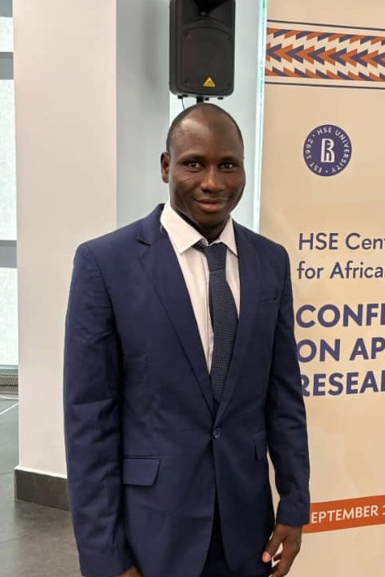

Adamu Muhammad is an MSc Public Policy candidate at HSE University, Moscow, with a track record of leading research and community-development projects across Nigeria.

Policy analysis and evidence-based formulation, the focus of his current MSc research at HSE University.
Climate action advocacy and youth training programmes delivered across northern Nigeria.
Published research on Nigerian foreign policy, governance, and political economy questions.
Research design, stakeholder interviews, and quantitative and qualitative data analysis.
Examines climate change as a threat to African development across agriculture, water resources, and health, and sets out policy challenges including limited institutional capacity and financing.
Read the full article →A comparative study of how two administrations’ foreign policy choices shaped Nigeria’s international standing, applying Traits Theory to leadership and image-building.
Read the full paper (PDF) →A political economy study of Gombe State’s cotton sector, using survey data from 351 cotton farmers to identify insecurity, poor seedlings, and pricing as the leading causes of declining production.
Read the full paper (PDF) →Argues that technology and innovation can help Nigeria counter insecurity and diversify its economy, while identifying brain drain and skills shortages as key obstacles to that progress.
Read the full paper (PDF) →Examines why Nigerian doctors and nurses migrate abroad and how that outflow weakens the country’s health care system, recommending structural and economic reforms to encourage a brain gain.
Read the full paper (PDF) →Adamu Muhammad is a research-driven MSc candidate in Public Policy at HSE University, Moscow, with a record of leading research and development projects, managing multi-stakeholder initiatives, and delivering impact in policy, climate change, and socio-economic development.
His work combines data analysis, research design, and evidence-based policy formulation with hands-on project management across Nigeria.
More about Adamu →